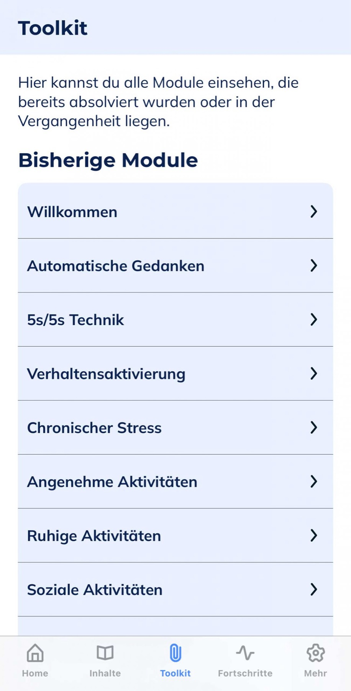

Un stress élevé et chronique peut entraîner de graves problèmes de santé, comme le burn-out, voire la dépression. Le manque d’activité physique est un facteur de risque supplémentaire et pèse aussi sur votre santé mentale. Grâce à un programme de plusieurs semaines, actiself vous aide à mieux gérer le stress, à bouger davantage et à devenir plus actif. Vous pouvez ainsi vous protéger de la surcharge et prévenir les problèmes de santé qui en découlent.



Nous vous accompagnons pas à pas vers un meilleur bien-être – avec des objets connectés
Grâce aux montres connectées comme l’Apple Watch ou aux bracelets d’activité, actiself rend visibles vos progrès vers un mode de vie plus actif et vous aide à atteindre vos objectifs personnels. C’est vous qui décidez de ce que vous voulez atteindre. En même temps, le suivi par objets connectés permet à actiself de mieux comprendre où vous avez besoin de soutien et de vous faire des recommandations plus ciblées.
Comment fonctionne actiself ?
Le programme actiself comprend 42 exercices sur des thèmes comme la gestion du stress, les pensées négatives, l’hygiène du sommeil et l’activation comportementale. Tous les contenus sont des éléments efficaces et fondés sur des preuves issus de la thérapie comportementale. Avec un exercice par jour, vous favorisez votre santé mentale pendant 6 semaines. Avec actiself, vous vous entraînez aussi à intégrer davantage d’activité physique et d’activités agréables et sociales dans votre quotidien. actiself vous accompagne avec des questions quotidiennes sur votre humeur et votre sommeil.